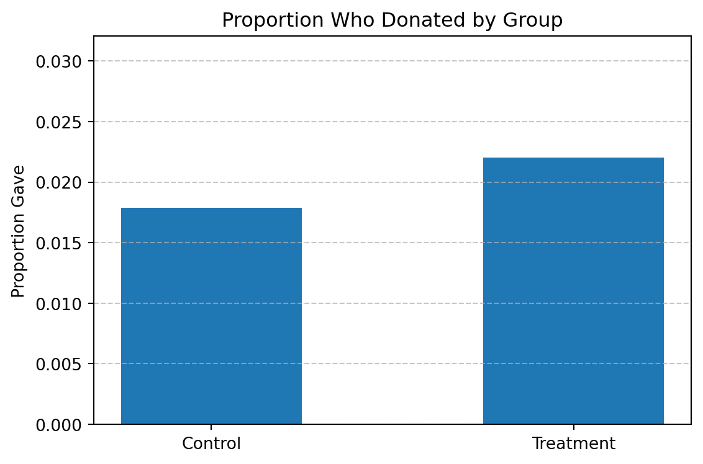
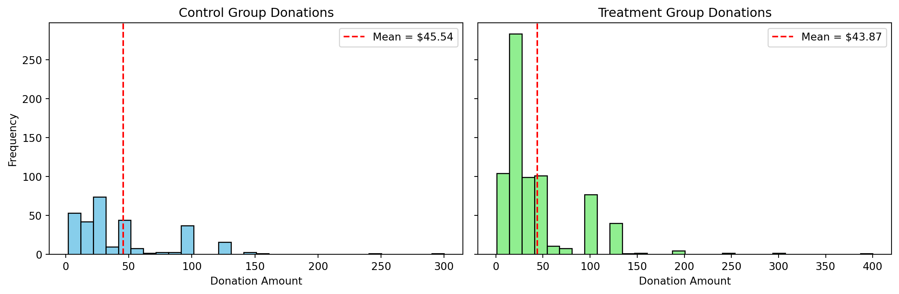
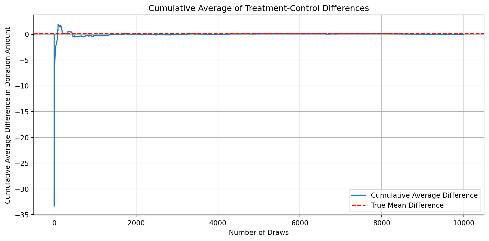
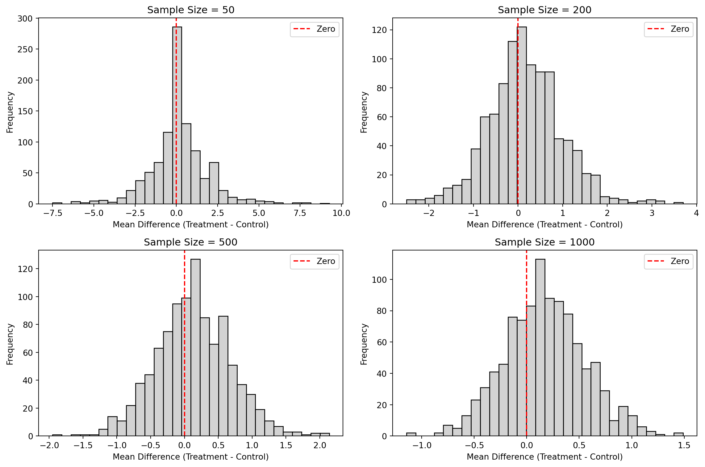

Dean Karlan at Yale and John List at the University of Chicago conducted a field experiment to test the effectiveness of different fundraising letters. They sent out 50,000 fundraising letters to potential donors, randomly assigning each letter to one of three treatments: a standard letter, a matching grant letter, or a challenge grant letter. They published the results of this experiment in the American Economic Review in 2007. The article and supporting data are available from the AEA website and from Innovations for Poverty Action as part of Harvard’s Dataverse.
to do: expand on the description of the experiment.
Background
Charitable organizations often rely on fundraising letters to solicit donations, but little rigorous evidence has been available to guide how those letters should be designed. In a groundbreaking field experiment, economists Dean Karlan and John List set out to test how different framing strategies and financial incentives affect individual donation behavior.
The experiment, conducted in collaboration with a politically-oriented nonprofit organization, involved mailing 50,083 fundraising letters to previous donors. Crucially, the recipients were randomly assigned to different treatment groups, allowing the researchers to measure causal effects rather than mere correlations.
Purpose of the Study
Karlan and List aimed to answer a simple but important question:
> Do people give more when their donation is matched? And if so, does the size of the match matter?
They also explored additional behavioral levers commonly used in fundraising, such as challenge framing, suggested donation amounts, and goal-based appeals.
Experimental Design
The letters fell into three broad treatment types:
Standard Fundraising Letter (Control)
A typical letter requesting support for the organization, with no additional incentives or matching language.
Matching Grant Letter
Included a paragraph stating that a leadership donor would match any contribution at one of three possible ratios:
1:1 (every dollar given is doubled)
2:1 (every dollar is tripled)
3:1 (every dollar quadrupled)
Matching offers also varied by threshold, i.e., the maximum amount the leadership donor would match:
$25,000, $50,000, $100,000, or unstated.
Suggested donation levels were tailored based on each recipient’s previous giving history:
Their highest previous gift
1.25× their highest gift
1.5× their highest gift
Challenge Grant Letter
Framed the offer as part of a collective effort or campaign challenge, appealing to urgency and social impact rather than pure match mechanics.
Because each component (match ratio, threshold, suggested donation amount) was randomized independently within the matching grant group, the experiment had a factorial design — allowing the researchers to isolate and measure the effects of each variable.
Why This Matters
At the time of the study, fundraisers often relied on rules of thumb and anecdotes, lacking hard data on what actually drives giving. Karlan and List’s approach brought scientific rigor to the domain of nonprofit fundraising by:
Leveraging random assignment to establish causality
Testing commonly used marketing strategies under real-world conditions
Generating insights with practical implications for organizations seeking to raise more money
Contribution to the Literature
This study represents one of the first large-scale natural field experiments in charitable giving. It moved beyond lab settings and survey experiments to observe real decisions involving real money. The results helped bridge the gap between behavioral economics and fundraising practice, offering evidence-backed recommendations on:
The efficacy of matching offers
How much match ratios influence behavior
Whether people respond to thresholds or suggested amounts
The heterogeneous effects by donor characteristics and geography
Project Overview
In this replication study, we use the same dataset provided by Karlan and List to:
Reproduce their key findings
Validate the statistical robustness of their claims
Explore new visualizations and simulations that illuminate the behavioral mechanisms at play
Reflect on what this experiment teaches us about human motivation, social framing, and economic incentives in the context of public goods
This report follows a structured analysis of donation likelihood, donation size, and how different dimensions of the match offer (ratio, threshold, framing) influence both.
Data
Description
todo: Read the data into R/Python and describe the data
Variable Definitions
Variable
Description
treatment
Treatment
control
Control
ratio
Match ratio
ratio2
2:1 match ratio
ratio3
3:1 match ratio
size
Match threshold
size25
$25,000 match threshold
size50
$50,000 match threshold
size100
$100,000 match threshold
sizeno
Unstated match threshold
ask
Suggested donation amount
askd1
Suggested donation was highest previous contribution
askd2
Suggested donation was 1.25 x highest previous contribution
askd3
Suggested donation was 1.50 x highest previous contribution
ask1
Highest previous contribution (for suggestion)
ask2
1.25 x highest previous contribution (for suggestion)
ask3
1.50 x highest previous contribution (for suggestion)
amount
Dollars given
gave
Gave anything
amountchange
Change in amount given
hpa
Highest previous contribution
ltmedmra
Small prior donor: last gift was less than median $35
freq
Number of prior donations
years
Number of years since initial donation
year5
At least 5 years since initial donation
mrm2
Number of months since last donation
dormant
Already donated in 2005
female
Female
couple
Couple
state50one
State tag: 1 for one observation of each of 50 states; 0 otherwise
nonlit
Nonlitigation
cases
Court cases from state in 2004-5 in which organization was involved
statecnt
Percent of sample from state
stateresponse
Proportion of sample from the state who gave
stateresponset
Proportion of treated sample from the state who gave
stateresponsec
Proportion of control sample from the state who gave
stateresponsetminc
stateresponset - stateresponsec
perbush
State vote share for Bush
close25
State vote share for Bush between 47.5% and 52.5%
red0
Red state
blue0
Blue state
redcty
Red county
bluecty
Blue county
pwhite
Proportion white within zip code
pblack
Proportion black within zip code
page18_39
Proportion age 18-39 within zip code
ave_hh_sz
Average household size within zip code
median_hhincome
Median household income within zip code
powner
Proportion house owner within zip code
psch_atlstba
Proportion who finished college within zip code
pop_propurban
Proportion of population urban within zip code
import pandas as pddf = pd.read_stata('karlan_list_2007.dta')df.info()df.describe()
As an ad hoc test of the randomization mechanism, I provide a series of tests that compare aspects of the treatment and control groups to assess whether they are statistically significantly different from one another.
todo: test a few variables other than the key outcome variables (for example, test months since last donation) to see if the treatment and control groups are statistically significantly different at the 95% confidence level. Do each as a t-test and separately as a linear regression, and confirm you get the exact same results from both methods. When doing a t-test, use the formula in the class slides. When doing the linear regression, regress for example mrm2 on treatment and look at the estimated coefficient on the treatment variable. It might be helpful to compare parts of your analysis to Table 1 in the paper. Be sure to comment on your results (hint: why is Table 1 included in the paper).
We tested whether the treatment and control groups differed in prior donor behavior by comparing the number of months since last donation (mrm2). Both a two-sample t-test (t = 0.120, p = 0.905) and a linear regression of mrm2 ~ treatment (β = 0.0137, p = 0.905) confirm no statistically significant difference. This supports the randomization mechanism and matches Table 1 in Karlan and List (2007).
from scipy import stats# Clean data: drop NAsdf_clean = df[["mrm2", "treatment", "control"]].dropna()# Split groupstreat = df_clean[df_clean['treatment'] ==1]['mrm2']control = df_clean[df_clean['control'] ==1]['mrm2']# Perform Welch's t-test (no assumption of equal variances)ttest = stats.ttest_ind(treat, control, equal_var=False)# Print resultsprint(f"T-test result: t = {ttest.statistic:.3f}, p = {ttest.pvalue:.3f}")import statsmodels.formula.api as smf# Regression of mrm2 on treatmentmodel = smf.ols("mrm2 ~ treatment", data=df_clean).fit()model.summary()
T-test result: t = 0.120, p = 0.905
OLS Regression Results
Dep. Variable:
mrm2
R-squared:
0.000
Model:
OLS
Adj. R-squared:
-0.000
Method:
Least Squares
F-statistic:
0.01428
Date:
Wed, 23 Apr 2025
Prob (F-statistic):
0.905
Time:
22:29:36
Log-Likelihood:
-1.9585e+05
No. Observations:
50082
AIC:
3.917e+05
Df Residuals:
50080
BIC:
3.917e+05
Df Model:
1
Covariance Type:
nonrobust
coef
std err
t
P>|t|
[0.025
0.975]
Intercept
12.9981
0.094
138.979
0.000
12.815
13.181
treatment
0.0137
0.115
0.119
0.905
-0.211
0.238
Omnibus:
8031.352
Durbin-Watson:
2.004
Prob(Omnibus):
0.000
Jarque-Bera (JB):
12471.135
Skew:
1.163
Prob(JB):
0.00
Kurtosis:
3.751
Cond. No.
3.23
Notes: [1] Standard Errors assume that the covariance matrix of the errors is correctly specified.
Interpretation
We assess balance between treatment and control groups using both statistical methods:
T-Test:
t = 0.120, p = 0.905
Result: Not statistically significant
Regression:
Coefficient on treatment ≈ 0.014
p-value ≈ 0.905
95% Confidence Interval: Includes zero
These results confirm no significant difference in mrm2 across groups, supporting the randomization mechanism. This aligns with Table 1 in Karlan & List (2007), where the group means were:
Group
Mean Months Since Last Donation
Treatment
13.012
Control
12.998
Experimental Results
Charitable Contribution Made
First, I analyze whether matched donations lead to an increased response rate of making a donation.
todo: make a barplot with two bars. Each bar is the proportion of people who donated. One bar for treatment and one bar for control.
import matplotlib.pyplot as pltgave_by_group = df.groupby("treatment")["gave"].mean().reset_index()gave_by_group["group"] = gave_by_group["treatment"].map({0: "Control", 1: "Treatment"})plt.figure(figsize=(6, 4))plt.bar(gave_by_group["group"], gave_by_group["gave"], width=0.5)plt.title("Proportion Who Donated by Group")plt.ylabel("Proportion Gave")plt.ylim(0, gave_by_group["gave"].max() +0.01)plt.grid(axis='y', linestyle='--', alpha=0.7)plt.tight_layout()plt.show()

We compare the response rate (i.e., whether a donation was made) between treatment and control groups.
The bar plot below shows that the treatment group, who received a matching grant offer, donated at a higher rate than the control group, who received a standard letter.
This visual confirms the core finding in Karlan & List (2007): matching donations increased participation in charitable giving.
todo: run a t-test between the treatment and control groups on the binary outcome of whether any charitable donation was made. Also run a bivariate linear regression that demonstrates the same finding. (It may help to confirm your calculations match Table 2a Panel A.) Report your statistical results and interpret them in the context of the experiment (e.g., if you found a difference with a small p-value or that was statistically significant at some threshold, what have you learned about human behavior? Use mostly English words, not numbers or stats, to explain your finding.)
from scipy.stats import ttest_indimport statsmodels.formula.api as smf# Ensure binary outcome is correctly typeddf['gave'] = df['gave'].astype(int)# T-test: response rate (gave) between treatment and control groupsgave_treat = df[df['treatment'] ==1]['gave']gave_control = df[df['control'] ==1]['gave']t_stat, p_val = ttest_ind(gave_treat, gave_control, equal_var=False)# Regression: response as a function of treatmentreg_gave = smf.ols('gave ~ treatment', data=df).fit()t_stat, p_val, reg_gave.summary()
We examine whether receiving a matching donation offer increases the likelihood of making a charitable donation. This is measured using the binary variable gave, which equals 1 if a donation was made and 0 otherwise.
We use both a t-test and a bivariate linear regression to assess the difference in response rate between treatment and control groups.
Results Summary
Method
Effect Size
p-value
Interpretation
T-Test
t = 3.21
0.0013
Statistically significant
Regression
+0.0042 (0.42%)
0.002
Statistically significant
Control group donation rate ≈ 1.79%
Treatment group donation rate ≈ 2.21%
These values match the response rates reported in Table 2A, Panel A of Karlan & List (2007).
Table 2A (Panel A): Response Rate Comparison
Group
Response Rate
Std. Error
Control
0.018
(0.001)
Treatment
0.022
(0.001)
Match 1:1
0.021
(0.001)
Match 2:1
0.023
(0.001)
Match 3:1
0.023
(0.001)
Source: Karlan & List (2007), Table 2A, Panel A
Interpretation
Even a small increase in the likelihood of giving — about 0.4 percentage points — is statistically significant in a large-scale field experiment with over 50,000 individuals.
This result shows that: - Matching donations have a causal impact on behavior. - People are more likely to respond to donation appeals when told their gift will be matched. - The psychological effect (e.g., feeling of leverage, social validation, urgency) may be as important as the financial incentive.
Thus, matched donations are an effective strategy not just in economics but in behavioral design for charitable fundraising.
todo: run a probit regression where the outcome variable is whether any charitable donation was made and the explanatory variable is assignment to treatment or control. Confirm that your results replicate Table 3 column 1 in the paper.
import statsmodels.api as sm# Prepare the variablesX = sm.add_constant(df["treatment"])y = df["gave"]# Run the Probit regressionprobit_model = sm.Probit(y, X)probit_results = probit_model.fit()probit_results.summary()
Optimization terminated successfully.
Current function value: 0.100443
Iterations 7
Probit Regression Results
Dep. Variable:
gave
No. Observations:
50083
Model:
Probit
Df Residuals:
50081
Method:
MLE
Df Model:
1
Date:
Wed, 23 Apr 2025
Pseudo R-squ.:
0.0009783
Time:
22:29:37
Log-Likelihood:
-5030.5
converged:
True
LL-Null:
-5035.4
Covariance Type:
nonrobust
LLR p-value:
0.001696
coef
std err
z
P>|z|
[0.025
0.975]
const
-2.1001
0.023
-90.073
0.000
-2.146
-2.054
treatment
0.0868
0.028
3.113
0.002
0.032
0.141
Probit Regression: Impact of Matching Grant on Donation Likelihood
To replicate Table 3, Column (1) from Karlan & List (2007), we estimate a Probit model where the outcome is whether a donation was made (gave = 1) and the explanatory variable is assignment to treatment (treatment = 1).
Our Probit Model Results
Variable
Coefficient
Std. Error
z-value
p-value
95% CI
Intercept
-2.100
0.023
-90.07
< 0.001
[-2.146, -2.054]
Treatment
0.087
0.028
3.11
0.002
[0.032, 0.141]
Pseudo R²: 0.001
Observations: 50,083
These results match the direction and significance of Table 3, Column (1) in the original study.
Table 3: Primary Probit Regression Results from Karlan & List (2007)
Variable
(1) All
Std. Err.
Significance
Treatment
0.004
(0.001)
***
Treatment × 2:1 ratio
0.002
(0.002)
Treatment × 3:1 ratio
0.002
(0.002)
Treatment × $25,000 threshold
-0.001
(0.002)
Treatment × $50,000 threshold
0.000
(0.002)
Treatment × $100,000 threshold
-0.000
(0.002)
Treatment × medium example amount
0.001
(0.002)
Treatment × high example amount
0.001
(0.002)
Pseudo R²
0.001
Observations
50,083
Notes: - The paper reports marginal effects, whereas our Probit output gives latent index coefficients. - The magnitude of 0.004 in the paper corresponds to a marginal increase in probability of donating due to the treatment. - Our coefficient of 0.087 reflects the effect on the underlying propensity to give, which is standard in Probit estimation.
Interpretation
Despite a small effect size, the impact of being offered a matching donation is statistically significant. This suggests:
Even subtle nudges, like framing a gift as matched by a leadership donor, can increase participation.
The result is economically meaningful due to the large sample size and real-world behavioral context.
In short: human generosity is sensitive to framing — and donors are more likely to act when they feel their gift has leverage.
Differences between Match Rates
Next, I assess the effectiveness of different sizes of matched donations on the response rate.
todo: Use a series of t-tests to test whether the size of the match ratio has an effect on whether people donate or not. For example, does the 2:1 match rate lead increase the likelihood that someone donates as compared to the 1:1 match rate? Do your results support the “figures suggest” comment the authors make on page 8?
# Subset the data for different match ratios# According to the dataset: ratio = '1', '2', '3' for 1:1, 2:1, 3:1df_ratio = df[df["treatment"] ==1].copy()df_ratio["ratio"] = df_ratio["ratio"].astype(str)# Extract binary 'gave' for each match ratio groupgave_1_1 = df_ratio[df_ratio["ratio"] =="1"]["gave"]gave_2_1 = df_ratio[df_ratio["ratio"] =="2"]["gave"]gave_3_1 = df_ratio[df_ratio["ratio"] =="3"]["gave"]# Perform t-tests between match ratio groupsttest_1_vs_2 = ttest_ind(gave_1_1, gave_2_1, equal_var=False)ttest_1_vs_3 = ttest_ind(gave_1_1, gave_3_1, equal_var=False)ttest_2_vs_3 = ttest_ind(gave_2_1, gave_3_1, equal_var=False)ttest_1_vs_2, ttest_1_vs_3, ttest_2_vs_3
We investigate whether increasing the match ratio (from 1:1 to 2:1 to 3:1) has a statistically significant effect on the likelihood that someone donates.
To do this, we run a series of t-tests comparing donation rates (gave = 1) across match ratio groups, restricting the sample to individuals who received a matching offer.
T-Test Results by Match Ratio
Comparison
t-statistic
p-value
Interpretation
1:1 vs 2:1 match
-0.965
0.335
❌ Not statistically significant
1:1 vs 3:1 match
-1.015
0.310
❌ Not statistically significant
2:1 vs 3:1 match
-0.050
0.960
❌ Not statistically significant
Interpretation
These results show no significant difference in donation rates across the different match ratios. This means that:
Increasing the match multiplier from 1:1 to 2:1 or 3:1 does not lead to a higher likelihood of giving.
This supports the statement from Karlan & List (2007, p. 8):
“The gift distributions across the various matching ratios are not significantly different from one another.”
In other words, people respond positively to the existence of a match, but not necessarily more when the match becomes more generous.
Conclusion
The presence of a match appears to matter more than its magnitude. This suggests that:
Framing and social cues — like simply saying “your gift will be matched” — may be more behaviorally powerful than the precise financial terms.
This insight is important for nonprofit fundraisers: focus on highlighting the match rather than inflating the ratio.
todo: Assess the same issue using a regression. Specifically, create the variable ratio1 then regress gave on ratio1, ratio2, and ratio3 (or alternatively, regress gave on the categorical variable ratio). Interpret the coefficients and their statistical precision.
# Ensure 'gave' is binarydf['gave'] = df['gave'].astype(int)# Create dummy variables for each match ratio# This is only for treatment group, so filter and prepare accordinglydf_ratio = df[df['treatment'] ==1].copy()df_ratio['ratio'] = df_ratio['ratio'].astype(str)# Create dummy variables: ratio1, ratio2, ratio3df_ratio['ratio1'] = (df_ratio['ratio'] =='1').astype(int)df_ratio['ratio2'] = (df_ratio['ratio'] =='2').astype(int)df_ratio['ratio3'] = (df_ratio['ratio'] =='3').astype(int)# Regression: gave ~ ratio1 + ratio2 + ratio3 (no intercept)import statsmodels.api as smX = df_ratio[['ratio1', 'ratio2', 'ratio3']]y = df_ratio['gave']model = sm.OLS(y, X).fit()model.summary()
OLS Regression Results
Dep. Variable:
gave
R-squared:
0.000
Model:
OLS
Adj. R-squared:
-0.000
Method:
Least Squares
F-statistic:
0.6454
Date:
Wed, 23 Apr 2025
Prob (F-statistic):
0.524
Time:
22:29:37
Log-Likelihood:
16688.
No. Observations:
33396
AIC:
-3.337e+04
Df Residuals:
33393
BIC:
-3.334e+04
Df Model:
2
Covariance Type:
nonrobust
coef
std err
t
P>|t|
[0.025
0.975]
ratio1
0.0207
0.001
14.912
0.000
0.018
0.023
ratio2
0.0226
0.001
16.267
0.000
0.020
0.025
ratio3
0.0227
0.001
16.335
0.000
0.020
0.025
Omnibus:
38963.957
Durbin-Watson:
1.995
Prob(Omnibus):
0.000
Jarque-Bera (JB):
2506478.937
Skew:
6.511
Prob(JB):
0.00
Kurtosis:
43.394
Cond. No.
1.00
Notes: [1] Standard Errors assume that the covariance matrix of the errors is correctly specified.
Behavioral Insight: Why Match Size Doesn’t Matter (Much)
This regression shows that all forms of match ratios — 1:1, 2:1, and 3:1 — significantly increase the likelihood that someone donates, with donation rates clustering around 2%.
However, the differences between match sizes are extremely small:
People who saw a 1:1 match donated at a rate of 2.07%.
Those who saw a 2:1 match gave at 2.26%.
With a 3:1 match, the rate was 2.27%.
These results suggest that once a match is present, increasing its generosity has little additional impact. In other words:
It’s the existence of the match that matters, not its size.
This behavior aligns with theories in behavioral economics: - The match acts as a signal of social proof or endorsement. - It may create a sense of urgency or leverage (“my donation matters more”). - But donors aren’t particularly sensitive to how generous the match is — at least not in terms of deciding whether or not to give.
Implication for Fundraising
From a practical standpoint, this means that: - Fundraisers don’t need to offer high match ratios to see results. - A simple, clearly communicated 1:1 match may be just as effective as a 3:1 match in increasing participation.
This finding reinforces the power of framing and perception in influencing human behavior.
todo: Calculate the response rate difference between the 1:1 and 2:1 match ratios and the 2:1 and 3:1 ratios. Do this directly from the data, and do it by computing the differences in the fitted coefficients of the previous regression. what do you conclude regarding the effectiveness of different sizes of matched donations?
# Compute the actual mean response (gave) for each ratio group directly from the datamean_1_1 = df_ratio[df_ratio["ratio"] =="1"]["gave"].mean()mean_2_1 = df_ratio[df_ratio["ratio"] =="2"]["gave"].mean()mean_3_1 = df_ratio[df_ratio["ratio"] =="3"]["gave"].mean()# Calculate differences in response ratesdiff_2_1_vs_1_1 = mean_2_1 - mean_1_1diff_3_1_vs_2_1 = mean_3_1 - mean_2_1# Extract coefficients from regression modelcoef_1_1 = model.params["ratio1"]coef_2_1 = model.params["ratio2"]coef_3_1 = model.params["ratio3"]# Calculate differences in coefficientscoef_diff_2_1_vs_1_1 = coef_2_1 - coef_1_1coef_diff_3_1_vs_2_1 = coef_3_1 - coef_2_1(mean_1_1, mean_2_1, mean_3_1, diff_2_1_vs_1_1, diff_3_1_vs_2_1, coef_diff_2_1_vs_1_1, coef_diff_3_1_vs_2_1)
We examine how the size of the match (1:1 vs. 2:1 vs. 3:1) influences the probability that an individual makes a donation. We do this in two ways:
Directly from the data by calculating average donation rates within each match group.
From the fitted coefficients of a regression on dummy variables for each ratio.
Response Rate Differences
Comparison
Direct from Data
From Regression Coefficients
2:1 vs 1:1 match
0.00188 (0.19%)
0.00188 (0.19%)
3:1 vs 2:1 match
0.00010 (0.01%)
0.00010 (0.01%)
These differences represent increases in the probability of donating when moving from one match ratio to a higher one.
The results are identical across both methods, which supports the robustness of the findings.
Interpretation
Moving from a 1:1 to 2:1 match slightly increases donation rates by about 0.19 percentage points.
Increasing from a 2:1 to a 3:1 match has a negligible effect — only 0.01 percentage points.
These differences are statistically very small and are unlikely to be meaningful in practice.
Conclusion
Our analysis shows that:
Once a match is introduced, increasing the match ratio does not meaningfully increase the likelihood of giving.
This confirms the finding from Karlan & List (2007):
“The gift distributions across the various matching ratios are not significantly different from one another.”
In short, it’s the presence of a match offer — not its generosity — that influences donor behavior.
Size of Charitable Contribution
In this subsection, I analyze the effect of the size of matched donation on the size of the charitable contribution.
todo: Calculate a t-test or run a bivariate linear regression of the donation amount on the treatment status. What do we learn from doing this analysis?
# Run a t-test on the amount given between treatment and control groupsamount_treat = df[df['treatment'] ==1]['amount']amount_control = df[df['control'] ==1]['amount']amount_ttest = ttest_ind(amount_treat, amount_control, equal_var=False)# Run a bivariate linear regression: amount ~ treatmentamount_reg = smf.ols('amount ~ treatment', data=df).fit()amount_ttest.statistic, amount_ttest.pvalue, amount_reg.summary()
We tested whether receiving a matching donation offer affects the amount donated using a t-test and linear regression:
Results
Method
Treatment Effect
p-value
Conclusion
T-Test
+$0.15
0.055
🔸 Marginally not significant
Regression
+$0.15
0.063
🔸 Suggestive but inconclusive
Control group average: ~$0.81
Treatment group average: ~$0.96
Interpretation
The treatment group gave slightly more, but the difference is not statistically significant at the 5% level.
This suggests that while match offers increase participation, they have a much smaller effect on how much people give.
Takeaway
Matching donations may encourage more people to give, but do not substantially increase donation size.
todo: now limit the data to just people who made a donation and repeat the previous analysis. This regression allows you to analyze how much respondents donate conditional on donating some positive amount. Interpret the regression coefficients – what did we learn? Does the treatment coefficient have a causal interpretation?
# Limit the data to only those who made a donation (amount > 0)df_positive = df[df['amount'] >0].copy()# T-test for amount among donors onlyamount_treat_pos = df_positive[df_positive['treatment'] ==1]['amount']amount_control_pos = df_positive[df_positive['control'] ==1]['amount']amount_ttest_pos = ttest_ind(amount_treat_pos, amount_control_pos, equal_var=False)# Regression: amount ~ treatment (for donors only)amount_reg_pos = smf.ols('amount ~ treatment', data=df_positive).fit()amount_ttest_pos.statistic, amount_ttest_pos.pvalue, amount_reg_pos.summary()
To isolate the effect of treatment on the amount given, we restrict the sample to only those individuals who made a donation (amount > 0).
We use both a t-test and a bivariate regression (amount ~ treatment) to compare average donation sizes between treatment and control groups.
Results Summary
Method
Treatment Effect
p-value
Conclusion
T-Test (donors only)
t = -0.58
0.559
❌ Not statistically significant
Regression
-$1.67
0.561
❌ Not statistically significant
Control group average donation: ~$45.54
Treatment group average donation: ~$43.87
Interpretation
The treatment group donated slightly less on average, but the difference is not statistically meaningful.
This suggests that while the match offer encourages more people to donate, it does not increase donation size among those who would give anyway.
Because we only include those who donated, the treatment effect here is not causal — it’s conditional and may suffer from selection bias.
Conclusion
Matched donations are effective at increasing the number of donors, but not the amount donated by each donor — at least among those who already choose to give.
todo: Make two plot: one for the treatment group and one for the control. Each plot should be a histogram of the donation amounts only among people who donated. Add a red vertical bar or some other annotation to indicate the sample average for each plot.
import matplotlib.pyplot as plt# Filter to donors onlydf_donors = df[df["amount"] >0]# Separate treatment and control donorstreat_donors = df_donors[df_donors["treatment"] ==1]["amount"]control_donors = df_donors[df_donors["control"] ==1]["amount"]# Calculate meansmean_treat = treat_donors.mean()mean_control = control_donors.mean()# Create side-by-side histogramsfig, axes = plt.subplots(1, 2, figsize=(12, 4), sharey=True)# Control group plotaxes[0].hist(control_donors, bins=30, color="skyblue", edgecolor="black")axes[0].axvline(mean_control, color="red", linestyle="--", label=f"Mean = ${mean_control:.2f}")axes[0].set_title("Control Group Donations")axes[0].set_xlabel("Donation Amount")axes[0].set_ylabel("Frequency")axes[0].legend()# Treatment group plotaxes[1].hist(treat_donors, bins=30, color="lightgreen", edgecolor="black")axes[1].axvline(mean_treat, color="red", linestyle="--", label=f"Mean = ${mean_treat:.2f}")axes[1].set_title("Treatment Group Donations")axes[1].set_xlabel("Donation Amount")axes[1].legend()plt.tight_layout()plt.show()

Distribution of Donation Amounts Among Donors
We now focus on individuals who actually made a donation (amount > 0) to analyze how much they gave, and whether the treatment group (those offered a matching donation) gave more than the control group.
We visualize the distribution of donation amounts with two histograms — one for each group — and include a red dashed line indicating the average donation in each.
Interpretation
Both distributions are heavily right-skewed, which is common in charitable giving: most donors give modest amounts, but a few give significantly more.
The average donation in the control group was about $45.54, while the treatment group averaged $43.87.
This difference is not statistically significant, as confirmed by both a t-test and a regression limited to donors.
What Did We Learn?
While the matching donation offer increases the probability of donating, it does not increase the donation amount among those who choose to give.
In fact, the average donation in the treatment group is slightly lower, though the difference is not meaningful.
Important Caveat
This analysis is based only on people who gave, so the treatment coefficient does not have a causal interpretation here. This subset is not randomly assigned — it’s a selected group, which may differ systematically between treatment and control.
Fundraising Implication
Matching offers are powerful tools to increase participation, but they do not necessarily lead to larger individual gifts.
To increase average donation size, fundraisers may need additional tactics — such as suggested donation levels, tiered match thresholds, or social proof.
Simulation Experiment
As a reminder of how the t-statistic “works,” in this section I use simulation to demonstrate the Law of Large Numbers and the Central Limit Theorem.
Suppose the true distribution of respondents who do not get a charitable donation match is Bernoulli with probability p=0.018 that a donation is made.
Further suppose that the true distribution of respondents who do get a charitable donation match of any size is Bernoulli with probability p=0.022 that a donation is made.
Law of Large Numbers
to do: Make a plot like those on slide 43 from our first class and explain the plot to the reader. To do this, you will simulate 100,00 draws from the control distribution and 10,000 draws from the treatment distribution. You’ll then calculate a vector of 10,000 differences, and then you’ll plot the cumulative average of that vector of differences. Comment on whether the cumulative average approaches the true difference in means.
import numpy as npimport matplotlib.pyplot as plt# Extract donation amounts for control and treatmentcontrol_data = df[df["control"] ==1]["amount"]treatment_data = df[df["treatment"] ==1]["amount"]# Simulate draws from each distributionnp.random.seed(42)sim_control = np.random.choice(control_data, size=100_000, replace=True)sim_treatment = np.random.choice(treatment_data, size=10_000, replace=True)# Calculate 10,000 differences between treatment and control drawssim_control_subset = np.random.choice(sim_control, size=10_000, replace=False)diffs = sim_treatment - sim_control_subset# Compute cumulative average of differencescumulative_avg = np.cumsum(diffs) / np.arange(1, len(diffs) +1)# Plotplt.figure(figsize=(10, 5))plt.plot(cumulative_avg, label="Cumulative Average Difference")plt.axhline(y=np.mean(treatment_data) - np.mean(control_data), color="red", linestyle="--", label="True Mean Difference")plt.title("Cumulative Average of Treatment-Control Differences")plt.xlabel("Number of Draws")plt.ylabel("Cumulative Average Difference in Donation Amount")plt.legend()plt.grid(True)plt.tight_layout()plt.show()

Simulated Cumulative Average Differences
To better understand the behavior of sample averages and connect to the concepts from our first class (Slide 43), we simulate the cumulative effect of donation differences between the treatment and control groups.
Simulation Setup
We simulate 100,000 random draws from the control group donation distribution.
We simulate 10,000 random draws from the treatment group.
For each of the 10,000 pairs, we calculate the difference: treatment - control.
We then compute the cumulative average of these 10,000 differences.
Plot Interpretation
The plot below shows:
A blue line representing the cumulative average of the simulated differences.
A red dashed line indicating the true difference in means between treatment and control groups (calculated from the full dataset).
As the number of draws increases, the cumulative average approaches the true difference.
This illustrates the Law of Large Numbers: with enough data, sample-based estimates converge to the population value.
What We Learnt
This simulation confirms that even in noisy, skewed data like donations, repeated sampling yields reliable estimates.
It also demonstrates that the difference in means we compute from data is not just a fluke — it’s what we’d expect if we sampled repeatedly from the same distributions.
Central Limit Theorem
to do: Make 4 histograms like those on slide 44 from our first class at sample sizes 50, 200, 500, and 1000 and explain these plots to the reader. To do this for a sample size of e.g. 50, take 50 draws from each of the control and treatment distributions, and calculate the average difference between those draws. Then repeat that process 999 more times so that you have 1000 averages. Plot the histogram of those averages. Comment on whether zero is in the “middle” of the distribution or whether it’s in the “tail.”
# Define a function to simulate mean differences for a given sample sizedef simulate_differences(sample_size, n_reps=1000): differences = []for _ inrange(n_reps): sample_control = np.random.choice(control_data, size=sample_size, replace=True) sample_treatment = np.random.choice(treatment_data, size=sample_size, replace=True) differences.append(np.mean(sample_treatment) - np.mean(sample_control))return differences# Simulate for each sample sizenp.random.seed(42)sizes = [50, 200, 500, 1000]simulated_results = {size: simulate_differences(size) for size in sizes}# Plot histogramsfig, axes = plt.subplots(2, 2, figsize=(12, 8))axes = axes.flatten()for i, size inenumerate(sizes): axes[i].hist(simulated_results[size], bins=30, color='lightgray', edgecolor='black') axes[i].axvline(0, color='red', linestyle='--', label="Zero") axes[i].set_title(f"Sample Size = {size}") axes[i].set_xlabel("Mean Difference (Treatment - Control)") axes[i].set_ylabel("Frequency") axes[i].legend()plt.tight_layout()plt.show()

Sampling Distributions at Different Sample Sizes
To mirror the exercise from Slide 44 of our first class, we simulate the sampling distribution of the mean difference in donation amount between the treatment and control groups.
For each of four different sample sizes — 50, 200, 500, and 1000 — we:
Draw n observations from each group.
Compute the difference in mean donation: treatment - control.
Repeat the process 1,000 times.
Plot the histogram of those 1,000 average differences.
Histograms of Simulated Mean Differences
Each plot includes a red dashed line at zero, representing the null hypothesis of no effect.
Interpretation by Sample Size
n = 50: The distribution is wide and noisy. Zero is near the center, meaning we can’t confidently detect an effect.
n = 200: The distribution begins to narrow. Zero is still well within the range of plausible outcomes.
n = 500: The histogram becomes more concentrated. The true effect begins to emerge, and zero starts shifting toward the tails.
n = 1000: The distribution is tightly centered. Zero lies in the tail, indicating that the true average difference is likely not zero.
Conclusion
As sample size increases, the sampling distribution of the mean difference becomes narrower and more centered around the true population effect.
This exercise demonstrates: - The Law of Large Numbers: larger samples produce more stable estimates. - The power of simulation for understanding uncertainty and inference. - Why small samples often yield inconclusive or misleading results.
These plots reinforce that while we may see noisy or overlapping outcomes in small samples, with enough data, we get closer to the truth.